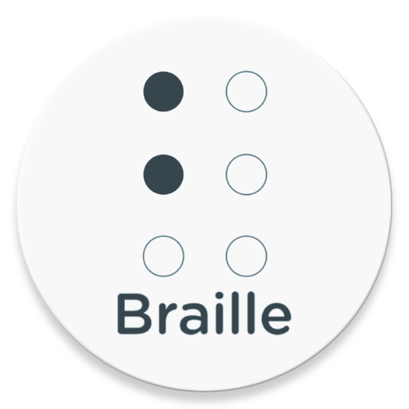

¿Qué es Open Braille Book?
¿De dónde surge la idea?
Hasta ahora.
¿Quiénes somos?
Luis Solís
es un estudiante de grado superior con especial interés en las tecnologías libres. Durante su paso por la universidad, participó en diferentes proyectos relacionados con el software libre y fue allí donde descubrió algunas de las barreras a las que se enfrentan las personas con discapacidad visual, especialmente en el ámbito científico y tecnológico.
Gabriel Barroso
es otro estudiante de grado superior de la misma clase con intereses más centralizados en mecánica y aplicaciones de la misma. A pesar de ser todavía bastante joven, ha estudiado por su cuenta temas relacionados con mecanismos y robótica, y después de que se lo comentaran sus compañeros de estudio, pensó en maneras de aplicar esos intereses para un proyecto que permitiera solventar problemas que tiene la gente con discapacidad visual en el ámbito tecnológico del día a día, mediante este producto.
Jordi Alonso
también es un estudiante del grado superior de sistemas informáticos en red. En sus años en la facultad de Derecho estudió cómo la legislación para con las personas con discapacidades en muchos casos es insuficiente y fallan como normas al no traducirse en un cambio real en el día a día de esos colectivos. Como lo es poner una barrera monetaria prohibitiva para la mayor parte del colectivo para algo tan básico como poder leer.